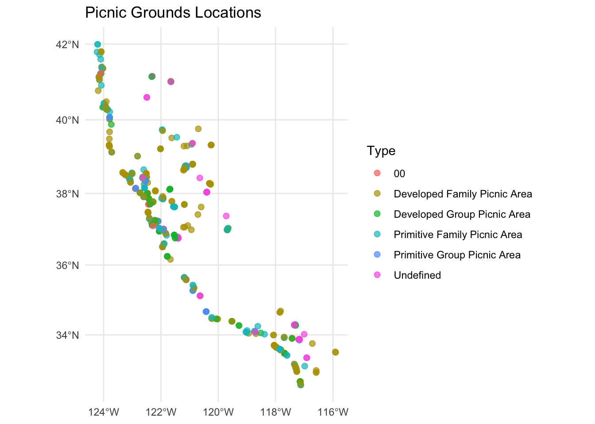
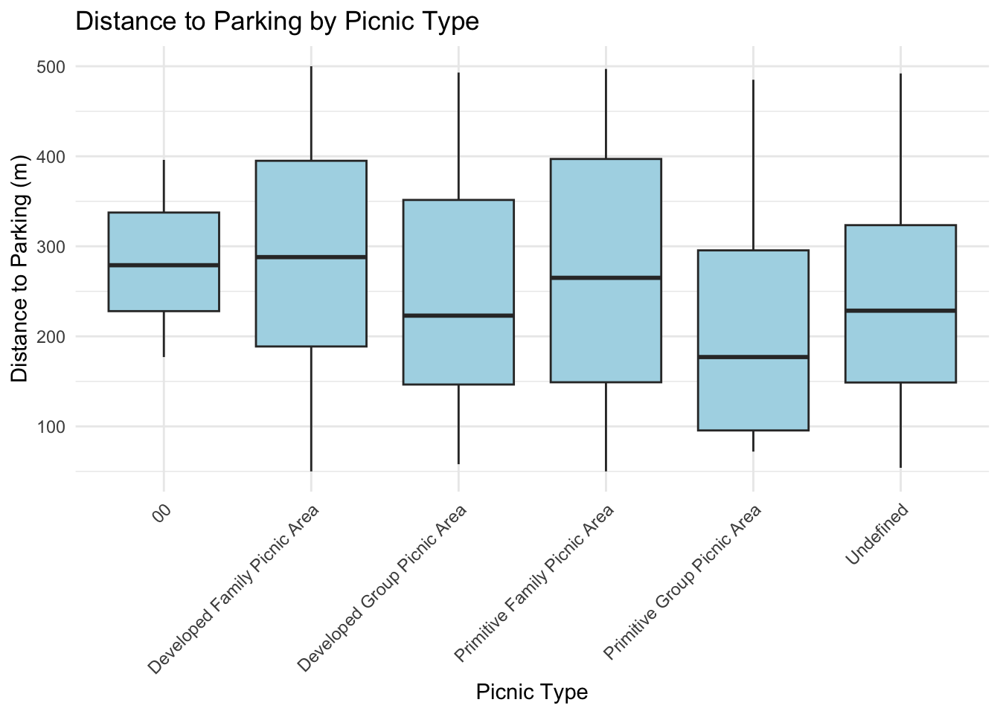

This is a short analysis demonstrating basic skills: reading spatial data, plotting, and simple analysis.
We use the PicnicGrounds.shp dataset at https://lab.data.ca.gov/
library(sf)
library(dplyr)
library(ggplot2)
library(leaflet)
picnic <- st_read("/Users/gianghuongduong/Downloads/Fall25/Geovis2/Geovis/docs/PicnicGrounds_-2604548030838180929/PicnicGrounds.shp")## Reading layer `PicnicGrounds' from data source
## `/Users/gianghuongduong/Downloads/Fall25/Geovis2/Geovis/docs/PicnicGrounds_-2604548030838180929/PicnicGrounds.shp'
## using driver `ESRI Shapefile'
## Simple feature collection with 612 features and 8 fields
## Geometry type: POINT
## Dimension: XY
## Bounding box: xmin: -13829060 ymin: 3833788 xmax: -12902240 ymax: 5159882
## Projected CRS: WGS 84 / Pseudo-Mercatorglimpse(picnic)## Rows: 612
## Columns: 9
## $ GISID [3m[38;5;246m<chr>[39m[23m "GIS0007122"[38;5;246m, [39m"GIS0007123"[38;5;246m, [39m"GIS0007124"[38;5;246m, [39m"GIS000712…
## $ DETAIL [3m[38;5;246m<chr>[39m[23m "Livermore Overlook Picnic Area"[38;5;246m, [39m"Maple Nook Picnic…
## $ TYPE [3m[38;5;246m<chr>[39m[23m "Primitive Family Picnic Area"[38;5;246m, [39m"Primitive Family Pi…
## $ SUBCLASS [3m[38;5;246m<chr>[39m[23m "Picnic Areas"[38;5;246m, [39m"Picnic Areas"[38;5;246m, [39m"Picnic Areas"[38;5;246m, [39m"Pic…
## $ UNITNBR [3m[38;5;246m<chr>[39m[23m "203"[38;5;246m, [39m"203"[38;5;246m, [39m"203"[38;5;246m, [39m"203"[38;5;246m, [39m"203"[38;5;246m, [39m"203"[38;5;246m, [39m"203"[38;5;246m, [39m"20…
## $ UNITNAME [3m[38;5;246m<chr>[39m[23m "Mount Diablo SP"[38;5;246m, [39m"Mount Diablo SP"[38;5;246m, [39m"Mount Diablo …
## $ SHARE [3m[38;5;246m<chr>[39m[23m "Public"[38;5;246m, [39m"Public"[38;5;246m, [39m"Public"[38;5;246m, [39m"Public"[38;5;246m, [39m"Public"[38;5;246m, [39m"P…
## $ GlobalID [3m[38;5;246m<chr>[39m[23m "abfbd6d7-bf4a-4f2b-ad87-aa35330efa15"[38;5;246m, [39m"e4aafe26-33…
## $ geometry [3m[38;5;246m<POINT [m]>[39m[23m POINT (-13573276 4559993)[38;5;246m, [39mPOINT (-13573371 45…#Add a simulated column for Distance to Parking (meters) since the dataset doesn't have one
set.seed(123)
picnic <- picnic %>%
mutate(Distance_to_Parking = round(runif(nrow(.), 50, 500), 0))Scatter plot Sepal.Length vs Sepal.Width colored by Species
ggplot(picnic) +
geom_sf(aes(color = TYPE), size = 2, alpha = 0.7) +
theme_minimal() +
labs(
title = "Picnic Grounds Locations",
color = "Type"
)
Boxplot of Distance to Parking by Type
ggplot(picnic, aes(x = TYPE, y = Distance_to_Parking)) +
geom_boxplot(fill = "lightblue") +
theme_minimal() +
labs(
title = "Distance to Parking by Picnic Type",
y = "Distance to Parking (m)",
x = "Picnic Type"
) +
theme(axis.text.x = element_text(angle = 45, hjust = 1))
# Does Type predict Distance_to_Parking?
m <- lm(Distance_to_Parking ~ TYPE, data = picnic)
summary(m)##
## Call:
## lm(formula = Distance_to_Parking ~ TYPE, data = picnic)
##
## Residuals:
## Min 1Q Median 3Q Max
## -240.071 -111.571 -9.103 112.329 272.316
##
## Coefficients:
## Estimate Std. Error t value Pr(>|t|)
## (Intercept) 284.000 73.556 3.861 0.000125
## TYPEDeveloped Family Picnic Area 6.071 73.928 0.082 0.934578
## TYPEDeveloped Group Picnic Area -32.773 75.013 -0.437 0.662336
## TYPEPrimitive Family Picnic Area -9.329 74.238 -0.126 0.900038
## TYPEPrimitive Group Picnic Area -71.316 79.150 -0.901 0.367936
## TYPEUndefined -46.897 75.434 -0.622 0.534381
##
## (Intercept) ***
## TYPEDeveloped Family Picnic Area
## TYPEDeveloped Group Picnic Area
## TYPEPrimitive Family Picnic Area
## TYPEPrimitive Group Picnic Area
## TYPEUndefined
## ---
## Signif. codes: 0 '***' 0.001 '**' 0.01 '*' 0.05 '.' 0.1 ' ' 1
##
## Residual standard error: 127.4 on 606 degrees of freedom
## Multiple R-squared: 0.02634, Adjusted R-squared: 0.01831
## F-statistic: 3.279 on 5 and 606 DF, p-value: 0.006255In this assignment, I explored the spatial distribution of picnic grounds and examined how the distance to parking varies by picnic type. The linear model results show that picnic type does not have a strong influence on distance to parking, as indicated by low R-squared (0.026) and mostly non-significant coefficients. This suggests that, in this dataset, distances to parking are relatively similar across different picnic types. Creating the geospatial plot helped visualize the locations and diversity of picnic grounds, while the boxplot and model provided insight into variation in accessibility. One limitation is that the Distance_to_Parking variable was simulated, so the analysis is illustrative rather than based on real measurements.